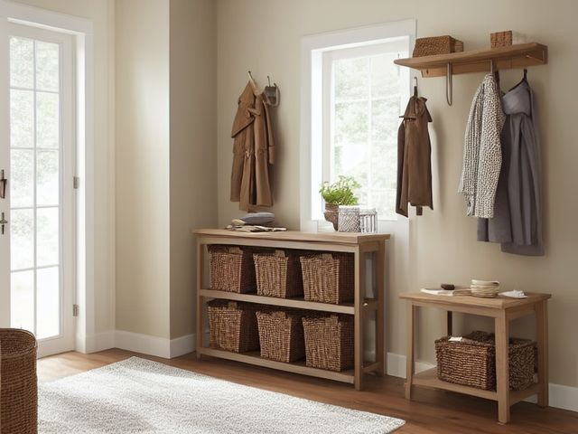

Hall Closet micro zone
The Seasonal and Guest Zone
Parks the things you use a few weekends a year: guest bedding, decorations, and travel gear.
One session: 45-75 min. most of it in Sort, because every lid has to come off and half of these bins have not been opened in years

What done looks like
Three or four lidded bins on the upper shelf, each labeled with what is inside and the month it was last closed. Guest pillows sealed in a zip bag. A shelf map taped inside the door showing which bin sits where, and nothing overhead heavy enough to need both hands.
Check these before you start
- FallReaching for a top-shelf bin while balanced on a hallway chair, with a lid you cannot see over hiding the step down.
- Fall, cut, or crushA bin of decorations lifted down overhead shifts its weight halfway and lands on your foot or on whoever is holding the door.
The six passes, in order
Work them in this order. Sorting after you have arranged things means arranging things you were about to remove.
Sort
Decide what stays. Everything else leaves the zone now.
Every lid comes off, on the floor, in daylight. Decorations for a tree you no longer put up, the guest pillow gone flat and yellow, and the bin marked "misc" whose contents you cannot name without looking all go.
Straighten
Give what stays a home, placed where the hand actually reaches.
One bin per occasion, not one bin per overflow. Tape a shelf map inside the door so you can send someone else for the guest bedding without them unstacking the whole shelf to find it.
Shine
Clean it, and use the cleaning to inspect what you cannot see when it is full.
Guest bedding gets washed before it goes into the bin rather than after it comes out, because a year sealed in a box is what your guests will smell. Wipe the dust off each lid while it is open, and put your nose to the bottom of every bin for the mustiness that means something went in damp last season.
Safety
Make the zone safe for everybody who uses it, including the shortest person.
A heavy lidded bin lifted down from above your head is how ankles and backs go, especially when the lid blocks your view of your own feet. Keep the heaviest bins at chest height, and keep a proper step stool in this closet so nobody stands on a hallway chair.
Standardize
Write down the best way you know today, so it survives you forgetting.
Every bin carries its contents and the date it was last closed. Photograph each bin packed and tape the picture to the lid, so repacking has a target instead of a guess.
Sustain
Attach the reset to something that already happens, so it keeps itself.
Taking the guest bed apart after a visit sends the bedding to the wash and then straight back into its own labeled bin, never onto the linen shelf.
The bin you have moved three times without opening
It has survived a house move and two closet reshuffles, and you still cannot say what is in it. That is the decision you have been avoiding, and the avoidance is itself the answer. Open it on the floor today. For each thing inside, name the specific occasion in the next twelve months when you will use it: a birthday, a holiday, a trip already booked. Anything you cannot name an occasion for does not get the lid back on, because a sealed bin of unknowns is not storage, it is a decision you agreed to keep paying for.
Cleaning it properly
A bin sealed for a year keeps whatever went in with it, damp and all, and that is what a guest smells. Wash bedding before it goes in, not after it comes out, and put your nose to the bottom of every bin while it is open.
Inspect as you clean. Cleaning is the only time you see the zone empty, so use it.
- A musty or closed-in smell at the bottom of a bin tells you damp went in with the contents last season. Flag it before you reseal.
- Black speckling or fuzzy spots on the guest bedding, on a pillow, or on the underside of a lid is mould taking hold. Flag it.
- Droppings, gnaw marks, or shredded nesting material in stored fabric means a mouse has been in. Flag it, and note the gap it likely came through.
- A bin lid that has cracked or warped and no longer seats flat is letting damp and pests straight in. Note it.
- A water stain spreading on the top shelf board or the wall above it, being the highest point in the closet, can be the first sign of a roof or pipe leak. Flag it.
The standard that keeps it fixed
Every bin is lidded, labeled with contents and the date it was last closed, photographed inside the lid, and stored clean and dry.
Reset trigger. When the guest bed is stripped after a visit, the bedding is washed and returned to its own bin before the closet door shuts.
The rest of the hall closet, in working order
Each of these is one session on its own. Finish this zone before you open the next.
- The Linen Shelf Zone
- The Cleaning Equipment Zone
- The Cleaning Supply Zone
- The Paper and Household Backstock
- The Seasonal and Guest Zone, you are here
The Hall Closet in full, with what each of the 5 zones is for
Related reading
- What is 6S?
- This zone's safety pass, in full
- Is one spot in this zone always the one you skip?
- Why this zone gets messy again
- Decluttering vs. organizing
- Before you buy storage for this zone
- Still does not fit, even after the honest count?
- Does something in this zone actually get used somewhere else?
- Stuck on one item in this zone?
- Written the standard, but nobody else follows it?
- Does everyone in the house agree what "done" looks like here?
- Does more than one person use this zone?
- Found a duplicate of something in this zone?
- Why the standard above names one home per category
- Is the everyday item in this zone actually the easy one to reach?
- Not sure whether to keep something in this zone?
- Does this zone keep running out of something?
- Started this zone and stalled partway through?
- Have you stopped noticing the clutter in this zone?
When you want it off the screen
Carry The Seasonal and Guest Zone into the room
The method above is complete and free. The Whole House Print Pack puts The Seasonal and Guest Zone and the other 113 micro zones on 684 printable cards, so the steps you just read are not stuck behind a phone screen while your hands are full.
The Print Pack, 19 dollarsJust this zone, 4 dollarsOr draw a card free
The Seasonal and Guest Zone on its own is 4 dollars for 6 cards. All 114 micro zones is 19 dollars for 684. The whole house is the better buy; the single zone is here so you can take only what you are working on.
If The Seasonal and Guest Zone keeps fighting back, the real problem usually sits somewhere else in the room. A one hour virtual consult is 250 dollars: we find the function, the friction and the root cause together, and you keep a written standard for the space. See what a consult covers.